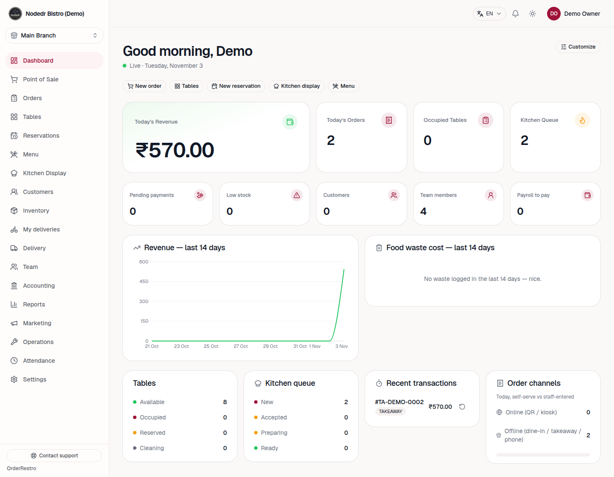
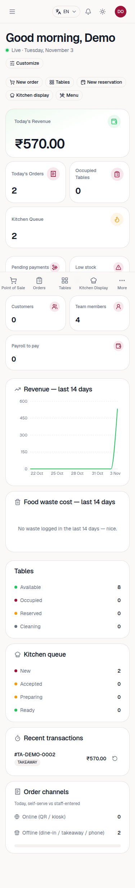
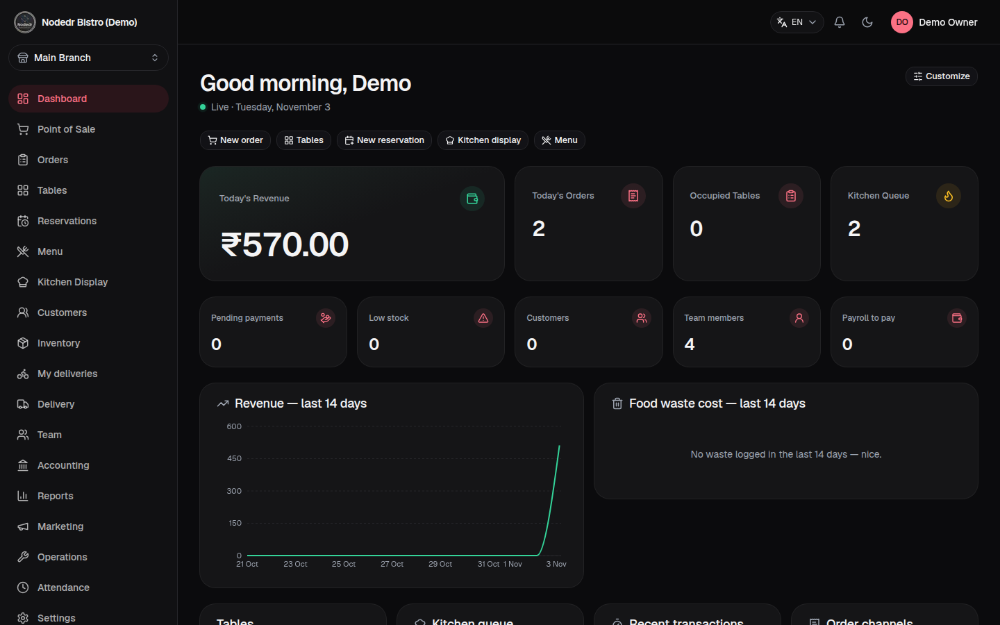
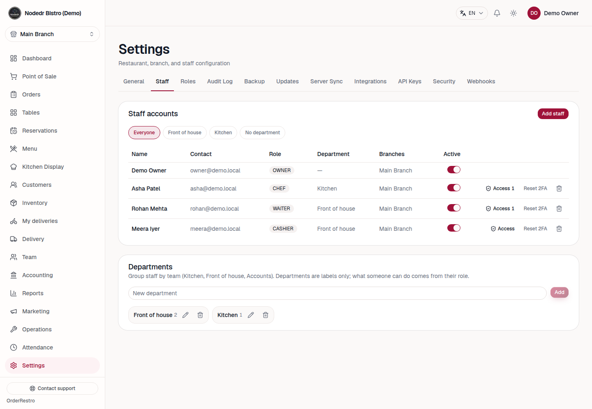
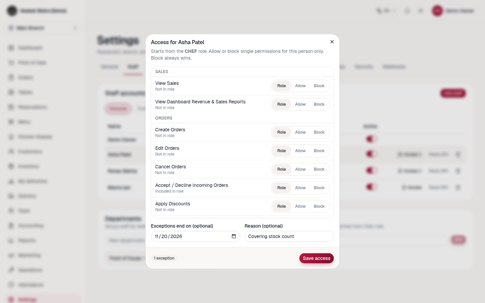
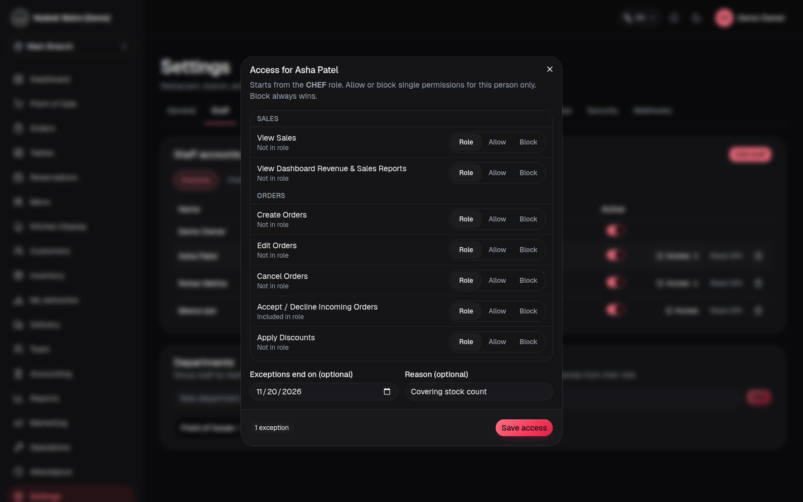
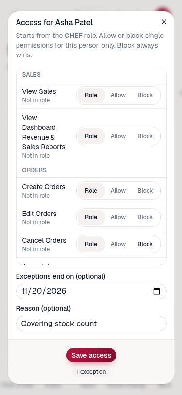
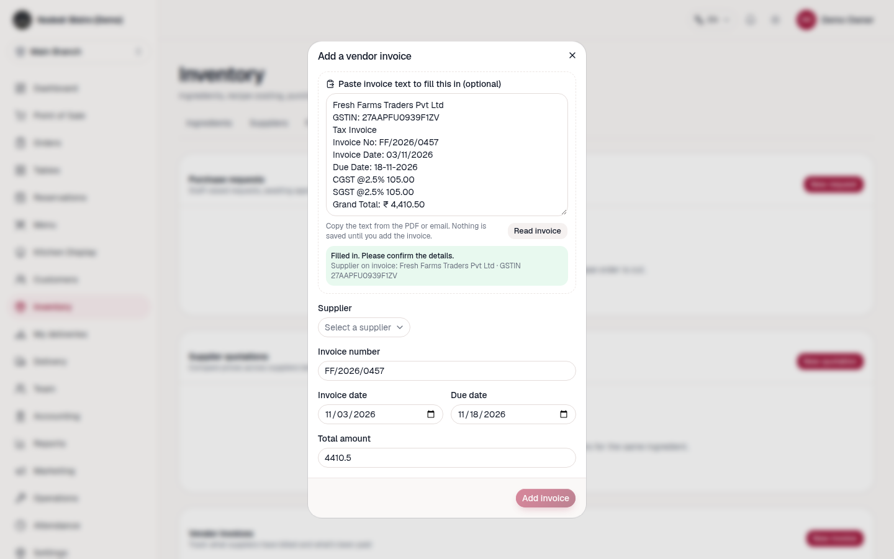

YatriDesk · Tutorial
Departments, access exceptions & invoice reading
Group your staff by team, give one person a little more (or less) access than their role, and fill in supplier invoices from pasted text. Plus how to install YatriDesk on every platform.
1. Install on your platform
YatriDesk runs on one computer in your restaurant (the server). Everyone else — tablets, phones, the kitchen screen — opens it in a browser or the mobile app. Pick the server option for your computer:
| You have | Use this | Effort |
|---|---|---|
| Ubuntu / Debian PC, mini-PC, or Raspberry Pi 4/5 (64-bit) | One-line installer (.deb, amd64 and arm64) | 2 minutes. Best choice. |
| Windows 10 / 11 | Docker Desktop + install.sh from WSL2 or Git Bash; or the Microsoft Store app | ~15 minutes |
| macOS | Docker Desktop + install.sh | ~10 minutes |
| CasaOS / ZimaOS home server | One-click app install | 2 minutes |
| Android phone / tablet, iPhone / iPad | Not a server. Use the YatriDesk mobile app, or any browser, to connect to your server. | 1 minute |
Ubuntu / Debian / Raspberry Pi
curl -fsSL https://raw.githubusercontent.com/jay-555/YatriDesk/master/packaging/deb/install-linux.sh | sudo bashInstalls Docker if it is missing, checks the download, and starts the app on port 1995.
Windows
- Open PowerShell and run
winget install Docker.DockerDesktop. Reboot if asked, accept the WSL2 backend, then open Docker Desktop once. - Open WSL2 (Ubuntu) or Git Bash — plain PowerShell cannot run the install script.
- Run:
git clone https://github.com/jay-555/YatriDesk.git cd yatrideesk ./install.sh
macOS
brew install --cask docker, then open Docker.app once so the engine is running.- Run the same three commands as Windows (
git clone,cd,./install.sh) in Terminal.
First sign-in
Open http://localhost:1995 on the server, or http://<server-ip>:1995 from another device on the same Wi-Fi. Create your restaurant at /signup. To explore with sample data, install with ./install.sh --demo and sign in as owner@demo.local / Password123! (change it before real use).
2. The dashboard
The dashboard is the first screen after sign-in. It answers three questions in order: how much did we make (the large revenue card), what needs me right now (orders, tables, kitchen queue, then pending payments and low stock) and how are we trending (14-day revenue and waste).



This release polished the dashboard: a lone card on a phone now spans the full row, an empty chart no longer leaves a large blank panel, and the refund button inside Recent transactions is a separate, labelled control (before, it was a button nested inside a button, which broke keyboard use). Use Customize to hide or reorder cards.
3. Departments
A department is a label for a team — Kitchen, Front of house, Accounts. It helps you find people quickly. It does not grant any access; what a person can do still comes from their role.

- Go to Settings → Staff and scroll to Departments.
- Type a name and press Add. Use the pencil to rename, the bin to delete (people are kept, just unassigned).
- When you Add staff (or edit them), pick a department. Filter the table with the chips above it.
4. Access exceptions
Sometimes one person needs one thing different from their role: a chef covering a stock count, or a waiter who should not give discounts. Instead of making a new role, set an exception for that person.


- In Settings → Staff, press Access on the person's row (shield icon on phones). The number shows how many exceptions they have.
- For each permission choose Role (no change), Allow or Block. Each row says whether the role already includes it.
- Optionally set Exceptions end on — access then returns to normal by itself — and a Reason for your records.
- Save access. It takes effect on their very next action; they do not need to sign out.
Rules that keep it safe
- Block always wins over the role and over an Allow.
- You can only Allow something you have yourself. The option is disabled otherwise, and the server enforces it too.
- You cannot change your own exceptions, and the Owner account cannot have exceptions, so nobody can lock the business out.
- Needs both Manage Users and Manage Roles. Every change is written to the Audit Log.

5. Reading invoice text
When a supplier sends an invoice as a PDF or email, copy its text and let YatriDesk fill in the form for you.

- Open Inventory → Procurement, then New invoice.
- Paste the invoice text into the box and press Read invoice.
- Invoice number, dates and total are filled in. If the supplier name on the invoice matches one of your suppliers exactly, it is picked for you; otherwise choose it.
- Check every field, then Add invoice. Nothing is saved until you press it.
It understands Indian formats: 03/11/2026, 3 Nov 2026, ₹ 1,24,410.50, Rs.250/-, CGST/SGST/IGST lines, and GSTIN (with a check-digit test). Anything it cannot find or doubts is listed in an amber note so you review it instead of trusting it.
6. How it stays safe
- Permissions are checked on the server for every request, using the person's current role and exceptions. Hiding a button is convenience, not security.
- Exceptions are scoped to your restaurant; a department or permission from another restaurant is rejected.
- The invoice reader has a 20,000-character limit, needs the Manage Inventory permission, never stores the text, and is tested against hostile input for speed.
- Accessibility: the new screens pass an automated WCAG 2.1 AA scan (0 violations), work by keyboard, and respect dark mode.
- Release checks: backend 330 unit tests, 59 web tests and 7 end-to-end tests against a real database (grant, block, expiry, escalation, departments, invoice parsing).
7. Troubleshooting
| Problem | Fix |
|---|---|
| No Access button on staff rows | You need both Manage Users and Manage Roles. The button is also hidden on your own row and on the Owner. |
| "You cannot grant … because you do not hold it yourself" | Ask someone who has that permission (usually the Owner) to grant it. |
| Invoice reader says "Invoice number not found" | Make sure the pasted text includes a line like Invoice No: 123; type it in by hand otherwise. |
| GSTIN warning | The 15th character did not match. Compare it with the invoice; one wrong character is the usual cause. |
| Can't reach the server from a phone | Phone and server must be on the same Wi-Fi; use the server's LAN IP and port 1995. |